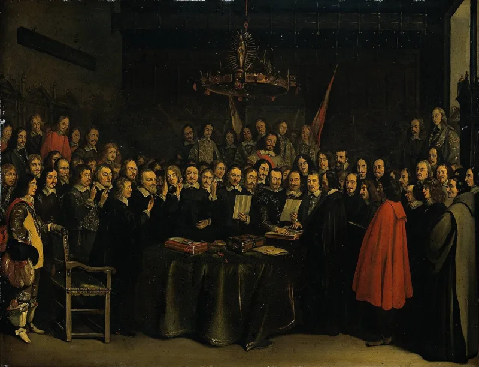

No good counter-argument has been published by atheist philosophers.
The Encyclopedia of Wars, by Phillips and Axelrod, is a standard secular work. It lists 1,763 wars across all of recorded history.
It counts 123 of them as having religious causes. That is about 7%.
The rest were fought over land, goods, thrones and power. Those are the plain wants of states, and they have not changed.
The largest death tolls in history came under regimes that were openly anti-religious. Stalin's Soviet Union.
Mao's China. Pol Pot's Cambodia.
The Black Book of Communism collects the counts.
The conclusion is not that atheism causes gulags. That is the same error in a mirror.
It is unfair to your atheist neighbour for the same reasons. The point is narrower.
Take away faith and you do not take away atrocity. What stays constant is people plus power with no check on it.
That is roughly what the doctrine of sin has said all along (Jeremiah 17:9). Faith has been a real accelerant in real wars.
Say so about the Crusades, the Inquisition and the Thirty Years' War, and do not flinch.
The 7% depends on how you sort. Faith is tangled into political wars everywhere.
Was the Thirty Years' War dynastic or confessional? Yes.
Christopher Hitchens never claimed that religion causes all wars. His claim was that it poisons the fights it touches.
It hands out absolute stakes, holy enemies and divine permission. As for the atheist states, they ran like churches.
Fixed doctrine, sacred texts, trials for heresy. So they may indict blind certainty rather than the lack of a god.
Though if every atrocity counts as religious in shape, the claim can never be tested. That risk cuts both ways.
Strong, against the claim as people actually make it. The data is secular and it is clear.
But the care you take in using it is the whole game. Name the Christian atrocities, one by one.
Never use Stalin as a weapon. Frame the last century as proof that dropping God does not fix people.
That argues for the doctrine of sin, not against your neighbour. David Bentley Hart's Atheist Delusions is the long version.
"Taking religion away didn't make the twentieth century gentle. I think the problem is us."

Hitchens never said religion causes all wars, only that it poisons the ones it touches.
The skeptic's better version starts with sorting. The 7% figure depends on how you sort, and religion is tangled up with 'political' wars everywhere. Was the Thirty Years' War dynastic or confessional? Yes.
Hitchens never claimed that religion causes all wars. His claim was that religion poisons the fights it touches. It supplies absolute stakes, a holy enemy, and God's own permission.
As for the atheist states, those regimes worked like religions. Doctrine that could not be wrong. Sacred texts. Trials for heresy. So they may indict hard certainty rather than the lack of God. The theist may fairly note that this rescue cuts both ways. If every atrocity counts as 'religious in shape', the claim can never be tested.
Strong on the data, but only if you name the Christian crimes first.
Strong against the claim as people actually make it, that religion is the main cause of war. The data is secular and decisive.
The care you take in using it is the whole game. Concede religious atrocities by name, one by one. Never weaponise Stalin as 'atheism did it'. Frame the last century as proof that dropping God does not fix people. That argues for the doctrine of sin, not against your neighbour.
Used clean, this turns a gotcha into common ground about human nature. David Bentley Hart's Atheist Delusions is the long-form corrective.